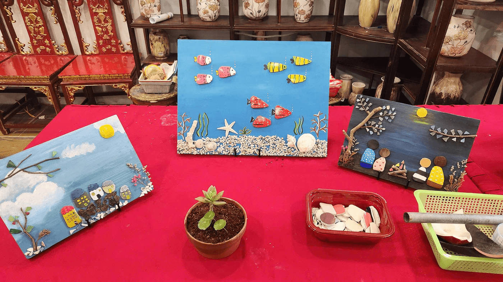

Tận dụng lại những mảnh vỡ gốm tưởng chừng như không còn tác dụng, sau đó tô vẽ những màu sắc và ghép chúng thành những bức tranh, góp phần giảm một lượng rác thải rắn ra môi trường, lan tỏa thông điệp tái chế vì một môi trường xanh đến cộng đồng.
Đó là hoạt động của dự án Gốm Sứ Xanh tại Bát Tràng, Hà Nội hiện nay, thu hút đông đảo mọi người đến trải nghiệm và yêu thích.

PV: Xin chào bà Lê Hà Phương - Nhà sáng lập Gốm Sứ Xanh. Gốm Sứ Xanh ra đời từ khi nào và sứ mệnh là gì?
Bà Lê Hà Phương: Gốm Sứ Xanh chỉ mới thành lập được khoảng 1 năm nay thôi. Gốm Sứ Xanh được ra đời với khao khát trở thành nơi phân loại gốm sứ tại nguồn. Sẽ là nơi thu gom toàn bộ rác thải gốm từ làng Bát Tràng nói riêng cũng như gốm sứ phế loại từ cộng đồng nói chung và “biến” những rác thải này các sản phẩm có ích trong cuộc sống.
PV: Hiện trong không gian của Gốm Sứ Xanh có những hoạt động và sản phẩm gì?
Bà Lê Hà Phương: Trong không gian của Gốm Sứ Xanh hiện nay có 4 sản phẩm chính. Đầu tiên là vẽ tranh gốm sứ tái chế; thứ 2 là làm Fridge magnet, tức là các sản phẩm mảnh gốm sứ gắn nam châm để trang trí tủ lạnh; thứ 3 là vẽ Dot painting, tức là vẽ các họa tiết lên các đĩa gốm bị sứt mẻ, bị lỗi một chút; cuối cùng là sửa gốm theo phương pháp kintsugi…
Cả 4 sản phẩm này sẽ hoạt dựa trên 2 hoạt động chính của workshop, thứ nhất là hoạt động cho khách lẻ hàng ngày gồm: khách đoàn gia đình, các bạn trẻ đến tham quan…hoạt động thứ 2 là diễn ra cho các đoàn trải nghiệm gồm: đoàn học sinh, sinh viên đến từ các trường.

PV: Vận hành Gốm Sứ Xanh cho đến nay thì đã gặp những khó khăn gì?
Bà Lê Hà Phương: Từ khi thành lập Gốm Sứ Xanh đến nay thì khó khăn đầu tiên là về nguồn nguyên vật liệu. Dù nguyên vật liệu có rất nhiều nhưng ban đầu thì chưa ai biết đến Gốm Sứ Xanh nên là chẳng biết phải làm như thế nào để thu gom mãnh vở về để thực hiện.
Tuy nhiên sau đó thì mình đã vượt qua được khó khăn về nguyên vật liệu, bởi vì dần dần cứ làm, cứ lan tỏa thế là nguồn nguyên vật liệu tự tìm đến. Sau khi vượt qua được khó khăn về nguyên vật liệu thì đến khó khăn về xử lý những nguyên vật liệu đó.
Vì nhìn thì thấy đơn giản thế thôi như là mấy mảnh gốm bỏ đi rồi, không có giá trị gì nhưng để “biến” chúng thành có giá trị thì phải đưa sức người vào rất nhiều.
Ví dụ như phải có một nơi để thu gom gốm, sau đó xử lý đập ra nhưng không phải đập ngẫu nhiên đâu mà mình sẽ phải tạo hình cho những viên gốm lỗi đó. Đập ra, tạo hình, rửa gốm, phân loại… nói chung tốn rất nhiều công sức vào những mảnh gốm đấy. Thế nên tưởng chừng như những mảnh gốm đấy bỏ đi, không có giá trị nhưng thực sự thì có rất nhiều giá trị.
PV: Gốm Sứ Xanh muốn lan tỏa điều gì đến với cộng đồng?
Bà Lê Hà Phương: Gốm Sứ Xanh có hai điều muốn lan tỏa đến cộng đồng. Đầu tiên là ý thức bảo vệ môi trường từ việc mình sẽ phân loại rác tại nguồn, phân loại những rác thải rắn. Bởi vì rác thải rắn chiếm rất nhiều diện tích trong môi trường, làm giảm diện tích trồng trọt, giảm diện tích chăn nuôi và giảm diện tích sống của con người.
Thậm chí khi rác thải gốm xả ra ngoài ao hồ, sông suối thì sẽ gây ách tắc nguồn nước, gây mất cân bằng hệ sinh thái trong môi trường nước và dẫn tới nhiều dịch bệnh. Thế nên cần bảo vệ môi trường từ việc giảm rác thải rắn ra môi trường.
Điều cuối cùng mà chúng tôi muốn lan tỏa là những mảnh gốm vô tri này bị vỡ rồi, tưởng như bỏ đi rồi nhưng nếu mình biết trân trọng, biết sử dụng và tái tạo lại thì những mảnh vỡ này sẽ được “tái sinh” thêm một vòng đời mới và mang lại những điều đẹp, có ý nghĩa cho bản thân và cho cộng đồng.
Bình luận